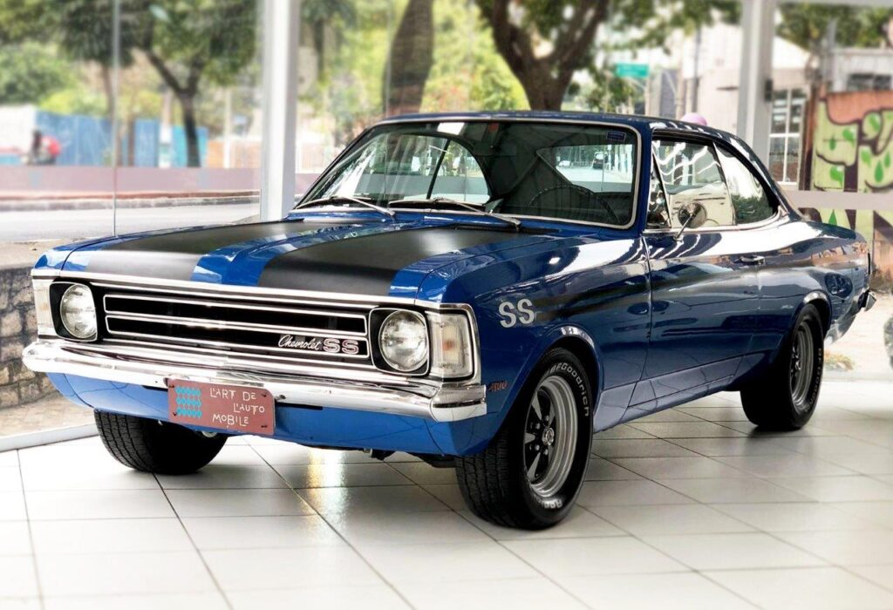

Chevrolet Opala

Opala é o primeiro carro da montadora produzido no Brasil, com 25 anos de história no país conquistou muitos brasileiros
Amado desde sua primeira unidade, o Chevrolet Opala tem uma história e tanto com o público brasileiro. A história de amor do Brasil começa pelo fato de ter sido o primeiro carro da empresa norte-americana a ser produzido em nossas terras.
Sua fabricação iniciou em 1968 e continuou por quase 25 anos, saindo de linha somente em 1992. O Opala atingiu a marca de mais de um milhão de unidades produzidas, entre sedãs, cupês e as famosas caravans.
Empurrãozinho de JK
Na década de 60, a General Motors recebeu a contribuição do Grupo Executivo da Indústria Automobilística (GEIA), criado pelo governo de Juscelino Kubitschek. Por meio dessa “força” foi definida a produção do primeiro carro nacional da Chevrolet.
O projeto começou dois anos antes de seu lançamento, em 1966, quando a GM do Brasil fez uma coletiva no Clube Atlético Paulistano, em São Paulo, para anunciar o começo do projeto, que até então era chamado de 676.
No começo do ano de lançamento, o presidente da General Motors, Damon Martin, falou: “A introdução dos padrões de qualidade Chevrolet no mercado brasileiro de automóveis acaba de ser anunciada”.
Pioneiro quando se fala de carro de passageiros da marca para o Brasil, o Opala foi lançado no segundo semestre de 1968, tornando o produto nacional “parte da consagrada família Chevrolet, a linha de automóveis mais conhecida em todo o mundo”.
O lançamento teve grande destaque, chegando ao público no VI Salão do Automóvel, realizado no Pavilhão de Exposições do Ibirapuera. O Chevrolet Opala estava, enfim, em cima de um palco giratório em um estande de 1.500 m², a mostra para todos os apaixonados por carros.
Apesar do Chevrolet Opala ter sido baseado no Opel Rekord alemão, Martin esclareceu que o produto brasileiro seria um carro médio. Já o conjunto mecânico foi atualizado para atender às condições brasileiras e vinha com especificações iguais ao norte-americano Chevrolet Impala.
Versões
A linha 1969 do Opala possuía apenas duas opções de acabamento: a Standard e a Luxo, estas com variações dos motores de 4 e 6 cilindros. O modelo em todas as opções possuía quatro portas. Alguns chamavam de Opala 2500 e 3800, respectivamente. O primeiro tinha motor de 153 pol3 (2509 cm³) e 80 cv de potência, enquanto o segundo recebeu o propulsor de seis-em-linha, 230 pol3 (3.768 cm³) de 125 cv de potência.
Para o Opala, os engenheiros da GM produziram um sistema com tração traseira e suspensão independente nas quatro rodas, que possuía braços sobrepostos e posterior ao eixo, diga-se de passagem, igual ao do Opel Rekord.

Em 1970, chegava então a versão mais importante de sua história: a SS. Além dessa, a GM também completou a família Opala com a Gran Luxo. O Opala SS carregava sob o capô o propulsor 250 pol³ de 4,1 litros e 140 cv de potência, capaz de chegar a 170 Km/h em apenas 12 segundos.
Externamente, o principal chamativo dessa versão eram os detalhes escurecidos e as rodas esportivas de aro 14. Por dentro, trazia volante de madeira com botão da buzina no centro com seu nome “SS”, conta-giros e relógio elétrico no console, câmbio de 4 marchas, rádio, desembaçador do para-brisa e freios dianteiros a disco.
Em 1975, o Opala ganhou uma derivação bem famosa, a Caravan. Na perua, a GM modificou as lanternas de formato trapezoidal. Além disso, a frente recebeu faróis retangulares e um capô mais acentuado.
Em 1980, chegou ao mercado outra versão emblemática do Opala: o Diplomata. Esse modelo ganhou um novo desenho, um acabamento mais sofisticado e outros equipamentos de série: direção servo-assistida e ar-condicionado.
No dia 16 de abril de 1992, foram produzidas as últimas unidades do icônico veículo, sendo elas um Opala Diplomata com transmissão automática e uma Caravan do tipo ambulância.
JK e seu fim em um Opala
Uma das curiosidades do Chevrolet Opala e sua história com Juscelino Kubitschek é um fato nem tanto agradável. JK era um dos principais financiadores da ideia do projeto de existir um carro nacional de alto desempenho. E foi justamente em um desses ele morreu.
O fundador de Brasília morreu em um Chevrolet Opala 1970 perto de Resende/RJ, saindo de São Paulo. Em 22 de agosto de 1976, o ex-presidente foi atingido por um ônibus, perdendo assim o controle do carro e atravessando um canteiro, que por fim o levou a bater em um caminhão. Juscelino Kubitschek estava no banco de trás e só foi identificado por seu RG.